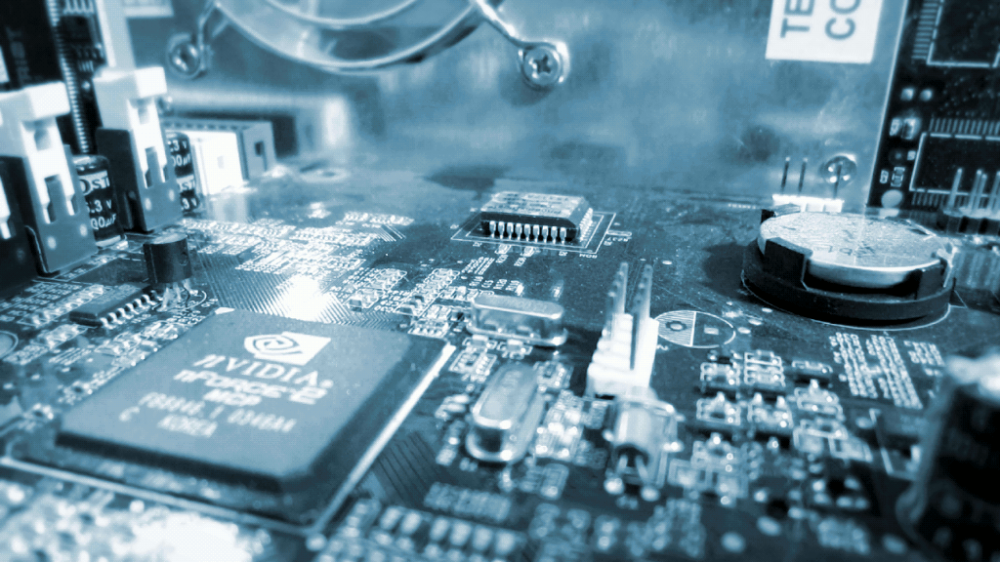

Sobre barramentos e dispositivos de entrada e saida:

Dentro dos computadores há a essencial necessidade ed comunicação, no qual, possibilita o intercâmbio de dados entre os componentes como por exemplo: Microprocessador entre outros componentes(teclado,impressora...) Desta maneira esse processo ocorre em basicamente 3 entidades, sendo elas:
Obs: A informação que é transferida pode ser tanto instrução quanto dados, podendo ser manipulados.A partir disto, é incontestável a importância da tecnologia de comunicação na arquitetura de computadores. No qual, ela é que define se terá um bom ou mau desempenho global os sistemas operacionais, devido a responsabilidade de interconectar os diversos componentes dos sistemas computacionais. Dispositivos de Entrada/Saída:
Os componenetes de entrada e saída são aqueles que possibilitam a troca de dados a serem tratados pelo computador humano (aquele que está programando) com outros equipamentos(como outro computador por exemplo), desta forma a organização dos dispositivos de entrada e saída dão de duas formas:
Obs: O controlador periférico pode ser uma placa conectada a um slot do barramento ou ao circuito integrado da placa-mãe, sendo que sua principal função é gerenciar os dispositivos e controlar o acesso ao barramento do computador, podendo até mesmo ler e escrever informações diretamente na memória principal usando a técnica DMA(Direct Memory Acess).Modos de TransmissãoPartindo de todos os conteúdos já aprendidos anteriormente, inicia-se o tema: Modos de Transmissão, no qual, os dados são manipulados por um microprocessador em formato binário em diversos tamanhos de palavras(8 bits, 16 bits...). Ademais, existem 2 modos de transmissão das informações codificadas, sendo elas:
|